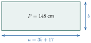
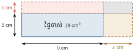

- កំណត់និយមន័យសមីការដឺក្រេទី 1 មានមួយអញ្ញាត
- ដោះស្រាយសមីការដឺក្រេទី 1 មានមួយអញ្ញាតតាមវិធីផ្សេងៗបានត្រឹមត្រូវ
- ដោះស្រាយចំណោទសមីការដឺក្រេទី 1 មានមួយអញ្ញាត ។
1. សមីការដឺក្រេទី 1 មានមួយអញ្ញាត
1.1. សញ្ញាណសមីការ
ឧទាហរណ៍ 1 ៖ ចម្ការកៅស៊ូមួយរាងចតុកោណកែងមានកន្លះបរិមាត្រស្មើនឹង \(\displaystyle 3~528\text{ m}\) ។ រកប្រវែងទទឹងចម្ការនោះ បើគេដឹងថាបណ្តោយមានប្រវែងស្មើនឹងទទឹង 6 ដងថែម \(\displaystyle 14\text{ m}\) ។
បើគេតាង \(\displaystyle x\) ជាប្រវែងទទឹង នោះ \(\displaystyle 6x+14\) ជាបណ្តោយ ។ គេបានសមភាព ៖
\(\displaystyle 7x+14=3~528\) ហៅថា សមីការដឺក្រេទី 1 មានមួយអញ្ញាត ។
បើ \(\displaystyle x=502\) គេបាន \(\displaystyle 7\times 502+14=3~528\) ឬ \(\displaystyle 3~514+14=3~528\) (ពិត) ។
ដូច្នេះប្រវែងទទឹងចម្ការកៅស៊ូដែលត្រូវរកគឺ \(\displaystyle 502\text{ m}\) ។ ចំពោះ \(\displaystyle x=502\) ហៅថា ឫសនៃសមីការ ។
ឧទាហរណ៍ 2 ៖ រកមួយចំនួន ដោយដឹងថាពីរដងនៃចំនួននោះដក 15 ស្មើនឹង 75 ។
តាង \(\displaystyle t\) ជាចំនួនដែលត្រូវរក ។ គេបាន \(\displaystyle 2t-15=75\) ហៅថា សមីការដឺក្រេទី 1 មានមួយអញ្ញាត ។
អង្គទី 1 ស្មើនឹង \(\displaystyle 2t-15\) ហើយអង្គទី 2 ស្មើនឹង 75 ។
បើ \(\displaystyle t=45\) គេបាន \(\displaystyle 2(45)-15 = 90-15 = 75\) ។ ដូច្នេះចំនួនដែលត្រូវរកគឺ 45 ហើយ \(\displaystyle t=45\) ជាឫសនៃសមីការ ។
សមីការដឺក្រេទី 1 មានមួយអញ្ញាត គឺជាសមីការក្រោយពីសម្រួលរួច មានរាង ៖
តម្លៃនៃអថេរដែលធ្វើឱ្យអង្គទាំងពីរស្មើគ្នា ហៅថា ឫសនៃសមីការ ។
គេឱ្យសមីការ \(\displaystyle (x+3)(x+5)=x^2+6x+3\) ។ សរសេរសមីការនេះជាសមីការដឺក្រេទី 1 មានមួយអញ្ញាត ។
ដំណោះស្រាយ ៖ ពន្លាតកត្តានៃអង្គទីមួយ ៖
សមីការក្លាយជា ៖
លើកអង្គទី 2 មកអង្គទី 1 ដោយប្តូរសញ្ញា ៖
ដូច្នេះ \(\displaystyle 2x+12=0\) ជាសមីការដឺក្រេទី 1 មានមួយអញ្ញាត ។
សម្គាល់ ៖ នៅក្នុងសមីការ គេអាចលើកតួពីអង្គម្ខាងទៅអង្គម្ខាងទៀតដោយគ្រាន់តែប្ដូរសញ្ញាតួនោះ ។
សរសេរសមីការដឺក្រេទី 1 តាមល្បះខាងក្រោម ៖
- ក. បីដងនៃមួយចំនួនថែម 21 ស្មើនឹង 85 ។
- ខ. ក្នុងចំណោមតម្លៃ \(\displaystyle m=12, m=3, m=6\) តើតម្លៃមួយណាជាឫសរបស់សមីការ \(\displaystyle 2m+6=12\)?
ចម្លើយ ៖
- ក. តាង \(\displaystyle x\) ជាចំនួននោះ គេបានសមីការ \(\displaystyle 3x+21=85\) ។
- ខ. ជំនួស \(\displaystyle m=3\) គេបាន \(\displaystyle 2(3)+6 = 6+6 = 12\) ពិត ។ ដូច្នេះ \(\displaystyle m=3\) ជាឫស ។
1.2. ការដោះស្រាយសមីការដឺក្រេទី 1 មានមួយអញ្ញាត
ឧទាហរណ៍ 1 ៖ ដោះស្រាយសមីការ \(\displaystyle 6x+15=45\)
ផ្ទៀងផ្ទាត់ ៖ \(\displaystyle 6(5)+15 = 30+15 = 45\) (ពិត) នាំឱ្យ \(\displaystyle x=5\) ជាឫសនៃសមីការ ។
ឧទាហរណ៍ 2 ៖ ដោះស្រាយសមីការ \(\displaystyle \frac{3}{5}x+3=\frac{1}{5}x-7\)
ផ្ទៀងផ្ទាត់ ៖ \(\displaystyle \frac{3}{5}(-25)+3 = -15+3 = -12\) និង \(\displaystyle \frac{1}{5}(-25)-7 = -5-7 = -12\) (ពិត) នាំឱ្យ \(\displaystyle x=-25\) ជាឫស ។
ឧទាហរណ៍ 3 ៖ ដោះស្រាយសមីការ \(\displaystyle \frac{4x-20}{2}=10\)
ឧទាហរណ៍ 4 ៖ ដោះស្រាយសមីការ \(\displaystyle 3(x+1)-5=3x-2\)
សមីការនេះពិតគ្រប់តម្លៃនៃ \(\displaystyle x\) ដូច្នេះសមីការមានឫសច្រើនរាប់មិនអស់ ។
ឧទាហរណ៍ 5 ៖ ដោះស្រាយសមីការ \(\displaystyle 3(x-1)=\frac{6x-1}{2}\)
សមភាពមិនពិត ដូច្នេះសមីការគ្មានឫស ។
ដើម្បីដោះស្រាយសមីការដឺក្រេទី 1 មានមួយអញ្ញាត ៖
- គេអាចលើកតួពីអង្គម្ខាងទៅអង្គម្ខាងទៀតដោយប្ដូរសញ្ញាតួនោះ
- គេអាចបូក ដក គុណ ឬចែកអង្គទាំងពីរនឹងចំនួនតែមួយ (ចំនួនចែកត្រូវខុសពីសូន្យ) ។
ដោះស្រាយសមីការ \(\displaystyle \frac{2x}{5}+\frac{x}{4}=\frac{26}{5}\) ។
ដំណោះស្រាយ ៖ គុណអង្គទាំងពីរនឹងភាគបែងរួម 20 ៖
ផ្ទៀងផ្ទាត់ ៖ \(\displaystyle \frac{2(8)}{5}+\frac{8}{4} = \frac{16}{5}+2 = \frac{26}{5}\) (ពិត) នាំឱ្យសមីការមានឫស \(\displaystyle x=8\) ។
រកបីចំនួនគត់គូរ៉ឺឡាទីបបន្តបន្ទាប់គ្នាដែលមានផលបូកស្មើនឹង \(\displaystyle -12\) ។
ដំណោះស្រាយ ៖ តាង \(\displaystyle x\) ជាចំនួនគត់គូទី 1 នោះចំនួនទី 2 គឺ \(\displaystyle x+2\) និងចំនួនទី 3 គឺ \(\displaystyle x+4\) ។
ចំនួនទាំងបីនោះគឺ \(\displaystyle -6\), \(\displaystyle -4\), និង \(\displaystyle -2\) ។
ចតុកោណកែងមួយមានបរិមាត្រស្មើនឹង \(\displaystyle 148\text{ cm}\) ។ រកវិមាត្រនៃចតុកោណកែងនោះ បើគេដឹងថាបណ្តោយមានប្រវែងស្មើនឹងបីដងទទឹងថែម \(\displaystyle 17\text{ cm}\) ។

ដំណោះស្រាយ ៖ តាង \(\displaystyle b\) ជាទទឹង នោះបណ្តោយគឺ \(\displaystyle a = 3b+17\) ។
បរិមាត្រ \(\displaystyle P = 2(a+b) = 148\) ៖
បណ្តោយ \(\displaystyle a = 3(14.25) + 17 = 42.75 + 17 = 59.75\text{ cm}\) ។
ដូច្នេះទទឹងមានប្រវែង \(\displaystyle 14.25\text{ cm}\) និងបណ្តោយមានប្រវែង \(\displaystyle 59.75\text{ cm}\) ។
ដោះស្រាយសមីការខាងក្រោម ៖
- ក. \(\displaystyle 8-2(x+1)=-3x+1\)
- ខ. \(\displaystyle \frac{5}{6}x+1=\frac{1}{4}-\frac{1}{2}x\)
- គ. \(\displaystyle -3(2n-5)=\frac{1}{2}(-12n+30)\)
- ឃ. \(\displaystyle -3y+5(6-y)=4(1-2y)\)
- ង. \(\displaystyle \frac{3x}{4}-\frac{x-5}{3}=\frac{x}{2}\)
- ច. \(\displaystyle \frac{y-12}{5}+\frac{3y}{4}=\frac{y+6}{2}\)
ចម្លើយ ៖
- ក. \(\displaystyle 8-2x-2 = -3x+1 \iff -2x+6 = -3x+1 \iff x = -5\)
- ខ. \(\displaystyle \frac{5}{6}x+\frac{1}{2}x = \frac{1}{4}-1 \iff \frac{8}{6}x = -\frac{3}{4} \iff \frac{4}{3}x = -\frac{3}{4} \iff x = -\frac{9}{16}\)
- គ. \(\displaystyle -6n+15 = -6n+15 \iff 0n = 0\) (ឫសច្រើនរាប់មិនអស់)
- ឃ. \(\displaystyle -8y+30 = 4-8y \iff 30 = 4\) (គ្មានឫស)
- ង. គុណនឹង 12 ៖ \(\displaystyle 9x-4(x-5) = 6x \iff 5x+20 = 6x \iff x = 20\)
- ច. គុណនឹង 20 ៖ \(\displaystyle 4(y-12)+15y = 10(y+6) \iff 19y-48 = 10y+60 \iff 9y = 108 \iff y = 12\)
1.3. សមីការមានអង្គទី 1 ជាផលគុណកត្តាដឺក្រេទី 1 និងអង្គទី 2 ស្មើនឹងសូន្យ
ឧទាហរណ៍ 1 ៖ ដោះស្រាយសមីការ \(\displaystyle (a+12)(a-4)=2a(a-4)\)
សមមូលនឹង \(\displaystyle a-4=0 \implies a=4\) ឬ \(\displaystyle 12-a=0 \implies a=12\) ។
សមីការមានចម្លើយពីរគឺ \(\displaystyle a=4\) និង \(\displaystyle a=12\) ។
ឧទាហរណ៍ 2 ៖ ដោះស្រាយសមីការ \(\displaystyle x^2-9=0\)
ផលគុណកត្តាស្មើនឹងសូន្យ លុះត្រាតែកត្តាណាមួយស្មើនឹងសូន្យ ៖
ដោះស្រាយសមីការ \(\displaystyle (2x-1)^2=(x+3)^2\) ។
ដំណោះស្រាយ ៖
នាំឱ្យ \(\displaystyle 3x+2=0 \implies x=-\frac{2}{3}\) ឬ \(\displaystyle x-4=0 \implies x=4\) ។
ដូច្នេះសមីការមានចម្លើយពីរគឺ \(\displaystyle x=-\frac{2}{3}\) និង \(\displaystyle x=4\) ។
ដោះស្រាយសមីការ \(\displaystyle (x+1)(x+2)-(x+1)(2x+1)=0\) ។
ដំណោះស្រាយ ៖
នាំឱ្យ \(\displaystyle x+1=0 \implies x=-1\) ឬ \(\displaystyle 1-x=0 \implies x=1\) ។
ដូច្នេះសមីការមានចម្លើយពីរគឺ \(\displaystyle x=-1\) និង \(\displaystyle x=1\) ។
ដោះស្រាយសមីការខាងក្រោម ៖
- ក. \(\displaystyle (a+3)^2-25=0\)
- ខ. \(\displaystyle (3x+4)^2=(x+1)^2\)
- គ. \(\displaystyle b^2(3b+1)=4(3b+1)\)
- ឃ. \(\displaystyle 8(x+1)^3=27(2x-1)^3\)
ចម្លើយ ៖
- ក. \(\displaystyle (a+3-5)(a+3+5) = (a-2)(a+8) = 0 \implies a = 2\) ឬ \(\displaystyle a = -8\)
- ខ. \(\displaystyle [(3x+4)+(x+1)][(3x+4)-(x+1)] = (4x+5)(2x+3) = 0 \implies x = -\frac{5}{4}\) ឬ \(\displaystyle x = -\frac{3}{2}\)
- គ. \(\displaystyle (3b+1)(b^2-4) = (3b+1)(b-2)(b+2) = 0 \implies b = -\frac{1}{3}, b = 2, b = -2\)
- ឃ. \(\displaystyle [2(x+1)]^3 = [3(2x-1)]^3 \implies 2x+2 = 6x-3 \implies 4x = 5 \implies x = \frac{5}{4}\)
1.4. ចំណោទសមីការដឺក្រេទី 1 មានមួយអញ្ញាត
ដើម្បីដោះស្រាយចំណោទដោយប្រើសមីការដឺក្រេទី 1 មានមួយអញ្ញាត គេត្រូវអនុវត្ត 4 ជំហាន ៖
- ជ្រើសរើសអញ្ញាត ៖ តាងបរិមាណមិនស្គាល់ដែលត្រូវរកដោយអក្សរ (\(\displaystyle x, y, t\ldots\)) ព្រមទាំងបញ្ជាក់លក្ខខណ្ឌនិងខ្នាត ។
- សរសេរសមីការ ៖ បកស្រាយបម្រាប់នៃចំណោទជាទំនាក់ទំនងគណិតវិទ្យាបង្កើតបានជាសមីការ ។
- ដោះស្រាយសមីការ ៖ គណនារកតម្លៃនៃអញ្ញាត ។
- ផ្ទៀងផ្ទាត់និងឆ្លើយ ៖ យកតម្លៃដែលរកឃើញទៅផ្ទៀងផ្ទាត់នឹងលក្ខខណ្ឌនៃចំណោទ រួចសរសេរសេចក្តីសន្និដ្ឋាន ។
ឧទាហរណ៍ 1 ៖ ផលបូកបីចំនួនគត់តគ្នាស្មើនឹង 300 ។ រកចំនួនគត់ទាំងបីនោះ ។
- តាង \(\displaystyle a\) ជាចំនួនទី 1 នោះចំនួនទី 2 គឺ \(\displaystyle a+1\) និងចំនួនទី 3 គឺ \(\displaystyle a+2\) ។
- សមីការ ៖ \(\displaystyle a+(a+1)+(a+2) = 300 \iff 3a+3 = 300 \iff 3a = 297 \implies a = 99\) ។
- ផ្ទៀងផ្ទាត់ ៖ \(\displaystyle 99 + 100 + 101 = 300\) (ពិត) ។
- ដូចនេះ បីចំនួនដែលត្រូវរកគឺ 99, 100 និង 101 ។
ឧទាហរណ៍ 2 ៖ ធីតាជិះកង់មានល្បឿន \(\displaystyle 15\text{ km/h}\) ហើយលក្ខិណាធ្វើដំណើរដោយថ្មើរជើងក្នុងល្បឿន \(\displaystyle 4\text{ km/h}\) ។ អ្នកទាំងពីរចេញដំណើរពីផ្ទះក្នុងពេលជាមួយគ្នាឆ្ពោះទៅសាលារៀន ។ ធីតាជិះកង់ដល់សាលារៀនហើយត្រឡប់មកវិញដោយគ្មានឈប់សម្រាក ។ អ្នកទាំងពីរជួបគ្នាត្រង់បង្គោលគីឡូម៉ែត្រលេខ \(\displaystyle 10\text{ km}\) (គិតពីផ្ទះ) ។ រកចម្ងាយពីផ្ទះទៅសាលារៀន ។
- តាង \(\displaystyle x\) ជាចម្ងាយពីផ្ទះទៅសាលារៀន (\(\displaystyle x > 10\text{ km}\)) ។
- រយៈពេលលក្ខិណាដើរដល់ចំណុចជួបគ្នា ៖ \(\displaystyle t_1 = \frac{10}{4}\text{ h}\) ។
- រយៈពេលធីតាជិះកង់ដល់ចំណុចជួបគ្នា ៖ ធីតាចរបានចម្ងាយ \(\displaystyle x + (x-10) = 2x-10\text{ km}\) ដូច្នេះ \(\displaystyle t_2 = \frac{2x-10}{15}\text{ h}\) ។
ដោយអ្នកទាំងពីរចេញដំណើរនិងជួបគ្នាក្នុងពេលតែមួយ ៖
\[\frac{10}{4} = \frac{2x-10}{15} \iff 150 = 4(2x-10) \iff 150 = 8x-40 \iff 8x = 190 \implies x = 23.75\text{ km}\]- ដូចនេះ ចម្ងាយពីផ្ទះទៅសាលារៀនគឺ \(\displaystyle 23.75\text{ km}\) ។
ចតុកោណកែងមួយមានទទឹង \(\displaystyle 2\text{ cm}\) និងបណ្តោយ \(\displaystyle 9\text{ cm}\) ។ បើគេបង្កើនទទឹង \(\displaystyle 1\text{ cm}\) និងបណ្តោយ \(\displaystyle x\text{ cm}\) នោះគេសង្កេតឃើញថាផ្ទៃក្រឡាថ្មីស្មើនឹង 2 ដងនៃផ្ទៃក្រឡាចាស់ ។ គណនារង្វាស់ \(\displaystyle x\) ។

ដំណោះស្រាយ ៖
ផ្ទៃក្រឡាចតុកោណកែងចាស់ ៖ \(\displaystyle \mathcal{A}_1 = 9 \times 2 = 18\text{ cm}^2\) ។
ចតុកោណកែងថ្មីមានទទឹង \(\displaystyle 2+1 = 3\text{ cm}\) និងបណ្តោយ \(\displaystyle 9+x\text{ cm}\) ។
ផ្ទៃក្រឡាថ្មី ៖ \(\displaystyle \mathcal{A}_2 = 3(9+x)\) ។
តាមបម្រាប់ \(\displaystyle \mathcal{A}_2 = 2\mathcal{A}_1\) ៖
ដូចនេះ ប្រវែងដែលត្រូវរកគឺ \(\displaystyle x = 3\text{ cm}\) ។
កសិករមួយក្រុមកំពុងភ្ជួរស្រែប្រវាស់ដៃគ្នា ។ បើគេរាប់ទាំងគោនិងកសិករមានចំនួនសរុប 36 តែបើគេរាប់ជើងវិញឃើញមានចំនួន 100 ។ រកចំនួនកសិករនិងចំនួនគោ ។
ដំណោះស្រាយ ៖
តាង \(\displaystyle m\) ជាចំនួនកសិករ (\(\displaystyle 0 < m < 36\)) នោះចំនួនគោគឺ \(\displaystyle 36-m\) ។
កសិករម្នាក់មានជើង 2 ដូច្នេះជើងកសិករសរុបគឺ \(\displaystyle 2m\) ។
គោមួយក្បាលមានជើង 4 ដូច្នេះជើងគោសរុបគឺ \(\displaystyle 4(36-m)\) ។
សមីការចំនួនជើងសរុប ៖
ចំនួនគោគឺ \(\displaystyle 36 - 22 = 14\text{ ក្បាល}\) ។
ដូចនេះ មានកសិករ 22 នាក់ និងគោ 14 ក្បាល ។
នៅពេលធ្វើតេស្តគណិតវិទ្យាក្នុងថ្នាក់មួយ សិស្សធ្វើត្រូវគ្រប់សំណួរមានចំនួន \(\displaystyle \frac{1}{3}\) នៃចំនួនសិស្សទាំងអស់ សិស្សធ្វើសំណួរបានពាក់កណ្តាលមានចំនួន \(\displaystyle \frac{2}{5}\) នៃចំនួនសិស្សទាំងអស់ និងសិស្សធ្វើមិនបានសោះមានចំនួន 8 នាក់ ។ រកចំនួនសិស្សទាំងអស់នៅក្នុងថ្នាក់រៀន ។
ចម្លើយ ៖
តាង \(\displaystyle N\) ជាចំនួនសិស្សទាំងអស់ក្នុងថ្នាក់ ៖
ដូចនេះ ថ្នាក់រៀននោះមានសិស្សសរុប 30 នាក់ ។
លំហាត់
ដោះស្រាយសមីការ ៖
- ក. \(\displaystyle 2x+3=12\)
- ខ. \(\displaystyle 5x+18=67\)
- គ. \(\displaystyle 9x+29=78\)
- ឃ. \(\displaystyle 5a-12=35\)
- ង. \(\displaystyle 2x-3=11\)
- ច. \(\displaystyle 8b+16=120\)
- ឆ. \(\displaystyle 8y=25+3y\)
- ជ. \(\displaystyle 5m-2=7-4m\)
- ឈ. \(\displaystyle 3x+5=2x-3\)
- ញ. \(\displaystyle 2n+5=25\)
- ដ. \(\displaystyle a+40=6a\)
- ឋ. \(\displaystyle 3x-2=-17\)
មើលដំណោះស្រាយ
- ក. \(\displaystyle 2x = 12-3 = 9 \implies x = \frac{9}{2} = 4.5\)
- ខ. \(\displaystyle 5x = 67-18 = 49 \implies x = \frac{49}{5} = 9.8\)
- គ. \(\displaystyle 9x = 78-29 = 49 \implies x = \frac{49}{9}\)
- ឃ. \(\displaystyle 5a = 35+12 = 47 \implies a = \frac{47}{5} = 9.4\)
- ង. \(\displaystyle 2x = 11+3 = 14 \implies x = 7\)
- ច. \(\displaystyle 8b = 120-16 = 104 \implies b = \frac{104}{8} = 13\)
- ឆ. \(\displaystyle 8y-3y = 25 \iff 5y = 25 \implies y = 5\)
- ជ. \(\displaystyle 5m+4m = 7+2 \iff 9m = 9 \implies m = 1\)
- ឈ. \(\displaystyle 3x-2x = -3-5 \iff x = -8\)
- ញ. \(\displaystyle 2n = 25-5 = 20 \implies n = 10\)
- ដ. \(\displaystyle 6a-a = 40 \iff 5a = 40 \implies a = 8\)
- ឋ. \(\displaystyle 3x = -17+2 = -15 \implies x = -5\)
ដោះស្រាយសមីការ ៖
- ក. \(\displaystyle 3(x-3)=12\)
- ខ. \(\displaystyle 3(x+4)=5x\)
- គ. \(\displaystyle 5(x-3)=5(3-x)\)
- ឃ. \(\displaystyle 4(a+6)=24a\)
- ង. \(\displaystyle 9(n-8)=-18n\)
- ច. \(\displaystyle 7(2t-3)=2(t+4)\)
- ឆ. \(\displaystyle 4(x-2)=3(x+1)\)
- ជ. \(\displaystyle 3z+10=2(z+3)\)
- ឈ. \(\displaystyle 2(x-3)=x(3-x)\)
មើលដំណោះស្រាយ
- ក. \(\displaystyle x-3 = \frac{12}{3} = 4 \implies x = 7\)
- ខ. \(\displaystyle 3x+12 = 5x \iff 2x = 12 \implies x = 6\)
- គ. \(\displaystyle x-3 = 3-x \iff 2x = 6 \implies x = 3\)
- ឃ. \(\displaystyle 4a+24 = 24a \iff 20a = 24 \implies a = \frac{24}{20} = \frac{6}{5} = 1.2\)
- ង. \(\displaystyle 9n-72 = -18n \iff 27n = 72 \implies n = \frac{72}{27} = \frac{8}{3}\)
- ច. \(\displaystyle 14t-21 = 2t+8 \iff 12t = 29 \implies t = \frac{29}{12}\)
- ឆ. \(\displaystyle 4x-8 = 3x+3 \iff x = 11\)
- ជ. \(\displaystyle 3z+10 = 2z+6 \iff z = -4\)
- ឈ. \(\displaystyle 2(x-3) = -x(x-3) \iff 2(x-3)+x(x-3) = 0 \iff (x-3)(x+2) = 0 \implies x = 3\) ឬ \(\displaystyle x = -2\)
ដោះស្រាយសមីការ ៖
- ក. \(\displaystyle \frac{3}{5}x-4=14\)
- ខ. \(\displaystyle \frac{3m}{4}=15\)
- គ. \(\displaystyle 2x+\frac{1}{2}=\frac{2}{3}\)
- ឃ. \(\displaystyle \frac{3a}{2}=9\)
- ង. \(\displaystyle \frac{3}{2}b+\frac{1}{3}=8\)
- ច. \(\displaystyle \frac{x}{4}=9-\frac{3x}{4}\)
មើលដំណោះស្រាយ
- ក. \(\displaystyle \frac{3}{5}x = 18 \implies x = 18 \times \frac{5}{3} = 30\)
- ខ. \(\displaystyle 3m = 15 \times 4 = 60 \implies m = 20\)
- គ. \(\displaystyle 2x = \frac{2}{3}-\frac{1}{2} = \frac{1}{6} \implies x = \frac{1}{12}\)
- ឃ. \(\displaystyle 3a = 18 \implies a = 6\)
- ង. \(\displaystyle \frac{3}{2}b = 8-\frac{1}{3} = \frac{23}{3} \implies b = \frac{23}{3} \times \frac{2}{3} = \frac{46}{9}\)
- ច. \(\displaystyle \frac{x}{4}+\frac{3x}{4} = 9 \iff \frac{4x}{4} = 9 \implies x = 9\)
ដោះស្រាយសមីការ ៖
- ក. \(\displaystyle x(x-3)=0\)
- ខ. \(\displaystyle 3x(x-8)=0\)
- គ. \(\displaystyle 12(x-27)=0\)
- ឃ. \(\displaystyle (x-3)(2x-8)=0\)
- ង. \(\displaystyle (3-x)(x+1)=0\)
- ច. \(\displaystyle (x-12)(x-7)=0\)
- ឆ. \(\displaystyle x^2-9=0\)
- ជ. \(\displaystyle x^2+64=16x\)
- ឈ. \(\displaystyle m^2+1=2m\)
- ញ. \(\displaystyle (x-3)^2-4=0\)
- ដ. \(\displaystyle 4a^3-12a^2+8a=0\)
- ឋ. \(\displaystyle 4x^2(x+1)=9(x+1)\)
- ឌ. \(\displaystyle (2x-3)^2=(2x-3)(x+1)\)
- ឍ. \(\displaystyle (x-3)(5x+3)=7(5x+3)\)
- ណ. \(\displaystyle (x-7)^2=(5x-6)^2\)
មើលដំណោះស្រាយ
- ក. \(\displaystyle x = 0\) ឬ \(\displaystyle x = 3\)
- ខ. \(\displaystyle x = 0\) ឬ \(\displaystyle x = 8\)
- គ. \(\displaystyle x = 27\)
- ឃ. \(\displaystyle x = 3\) ឬ \(\displaystyle 2x-8=0 \implies x = 4\)
- ង. \(\displaystyle x = 3\) ឬ \(\displaystyle x = -1\)
- ច. \(\displaystyle x = 12\) ឬ \(\displaystyle x = 7\)
- ឆ. \(\displaystyle (x-3)(x+3) = 0 \implies x = \pm 3\)
- ជ. \(\displaystyle x^2-16x+64 = (x-8)^2 = 0 \implies x = 8\)
- ឈ. \(\displaystyle m^2-2m+1 = (m-1)^2 = 0 \implies m = 1\)
- ញ. \(\displaystyle (x-3-2)(x-3+2) = (x-5)(x-1) = 0 \implies x = 5\) ឬ \(\displaystyle x = 1\)
- ដ. \(\displaystyle 4a(a^2-3a+2) = 4a(a-1)(a-2) = 0 \implies a = 0, a = 1, a = 2\)
- ឋ. \(\displaystyle (x+1)(4x^2-9) = (x+1)(2x-3)(2x+3) = 0 \implies x = -1, x = \frac{3}{2}, x = -\frac{3}{2}\)
- ឌ. \(\displaystyle (2x-3)[(2x-3)-(x+1)] = (2x-3)(x-4) = 0 \implies x = \frac{3}{2}\) ឬ \(\displaystyle x = 4\)
- ឍ. \(\displaystyle (5x+3)(x-3-7) = (5x+3)(x-10) = 0 \implies x = -\frac{3}{5}\) ឬ \(\displaystyle x = 10\)
- ណ. \(\displaystyle [(x-7)+(5x-6)][(x-7)-(5x-6)] = (6x-13)(-4x-1) = 0 \implies x = \frac{13}{6}\) ឬ \(\displaystyle x = -\frac{1}{4}\)
នៅពេលដែលលោកគ្រូដាក់លំហាត់ឱ្យសិស្សធ្វើ វិបុលបានធ្វើលំហាត់ដូចតទៅ ៖
គេឱ្យសមីការ \(\displaystyle 6m-15=10m-25\)
ដាក់អង្គទាំងពីរជាផលគុណកត្តា \(\displaystyle 3(2m-5)=5(2m-5)\)
ចែកអង្គទាំងពីរនឹង \(\displaystyle 2m-5\) គេបាន ៖\[\frac{3(2m-5)}{2m-5} = \frac{5(2m-5)}{2m-5} \implies 3 = 5\]តើវិបុលមានកំហុសត្រង់ណាក្នុងការដោះស្រាយសមីការ ? ចូររកកំហុសនោះ និងដោះស្រាយឱ្យបានត្រឹមត្រូវ ។
មើលដំណោះស្រាយ
កំហុសរបស់វិបុល ៖ វិបុលបានចែកអង្គទាំងពីរនៃសមីការនឹងកន្សោម \(\displaystyle (2m-5)\) ដោយមិនបានគិតថាកន្សោមនោះអាចស្មើនឹងសូន្យ ។ ក្នុងគណិតវិទ្យា គេមិនអាចចែកនឹងសូន្យបានឡើយ ។ ការចែកបែបនេះបណ្តាលឱ្យបាត់បង់ឫសពិតប្រាកដនៃសមីការ ។
ដំណោះស្រាយត្រឹមត្រូវ ៖\[\begin{aligned} 3(2m-5) &= 5(2m-5) \\ 3(2m-5) - 5(2m-5) &= 0 \\ -2(2m-5) &= 0 \\ 2m-5 &= 0 \implies m = \frac{5}{2} = 2.5 \end{aligned}\]ដូចនេះ សមីការមានឫសតែមួយគត់គឺ \(\displaystyle m = \frac{5}{2}\) (ឬ \(\displaystyle m = 2.5\)) ។
ផលបូកប្រាំចំនួនគត់តគ្នាស្មើនឹង 520 ។ រកចំនួនគត់ទាំងប្រាំនោះ ។
មើលដំណោះស្រាយ
តាង \(\displaystyle n\) ជាចំនួនគត់ទី 1 នោះចំនួនបន្តបន្ទាប់គឺ \(\displaystyle n+1, n+2, n+3, n+4\) ។
ផលបូកចំនួនទាំងប្រាំគឺ 520 ៖\[\begin{aligned} n + (n+1) + (n+2) + (n+3) + (n+4) &= 520 \\ 5n + 10 &= 520 \\ 5n &= 510 \implies n = 102 \end{aligned}\]ចំនួនទាំងប្រាំនោះគឺ \(\displaystyle 102, 103, 104, 105, 106\) ។
ផ្ទៀងផ្ទាត់ ៖ \(\displaystyle 102+103+104+105+106 = 520\) (ពិត) ។អាយុមីងសំស្មើបីដងនៃអាយុស៊ីណាដែលជាកូនរបស់គាត់ ។ កាលណាស៊ីណាមានអាយុស្មើនឹងអាយុម្តាយនាងសព្វថ្ងៃនេះ ផលបូកនៃអាយុអ្នកទាំងពីរស្មើនឹង 112 ឆ្នាំ ។ រកអាយុរបស់មីងសំ និងស៊ីណា ។
មើលដំណោះស្រាយ
តាង \(\displaystyle x\) ជាអាយុសព្វថ្ងៃរបស់ស៊ីណា (\(\displaystyle x > 0\)) នោះអាយុសព្វថ្ងៃរបស់មីងសំគឺ \(\displaystyle 3x\) ។
គម្លាតអាយុរវាងម្តាយនិងកូនគឺ \(\displaystyle 3x - x = 2x\) ឆ្នាំ (ថេរជានិច្ច) ។
នៅពេលស៊ីណាមានអាយុស្មើនឹងអាយុម្តាយសព្វថ្ងៃ គឺស៊ីណាមានអាយុ \(\displaystyle 3x\) ឆ្នាំ (រយៈពេល \(\displaystyle 2x\) ឆ្នាំក្រោយ) ។
នៅពេលនោះ ម្តាយមានអាយុ \(\displaystyle 3x + 2x = 5x\) ឆ្នាំ ។
ផលបូកអាយុអ្នកទាំងពីរនៅពេលនោះស្មើនឹង 112 ឆ្នាំ ៖\[3x + 5x = 112 \iff 8x = 112 \implies x = \frac{112}{8} = 14\text{ ឆ្នាំ}\]អាយុមីងសំសព្វថ្ងៃគឺ \(\displaystyle 3 \times 14 = 42\text{ ឆ្នាំ}\) ។
ផ្ទៀងផ្ទាត់ ៖ ពេលស៊ីណាមានអាយុ 42 ឆ្នាំ (28 ឆ្នាំក្រោយ) ម្តាយមានអាយុ \(\displaystyle 42+28 = 70\) ឆ្នាំ ។ ផលបូក \(\displaystyle 42+70 = 112\) ឆ្នាំ (ពិត) ។
ដូចនេះ ស៊ីណាមានអាយុ 14 ឆ្នាំ និងមីងសំមានអាយុ 42 ឆ្នាំ ។សូផាត មានអាយុ 51 ឆ្នាំ ហើយរស្មីមានអាយុ 21 ឆ្នាំ ។ តើរយៈពេលប៉ុន្មានឆ្នាំទៀតទើបសូផាតមានអាយុស្មើពីរដងនៃអាយុរស្មី ?
មើលដំណោះស្រាយ
តាង \(\displaystyle t\) ជារយៈពេលឆ្នាំទៅមុខទៀត (\(\displaystyle t \ge 0\)) ។
នៅពេលនោះ ៖- សូផាតមានអាយុ \(\displaystyle 51 + t\) ឆ្នាំ
- រស្មីមានអាយុ \(\displaystyle 21 + t\) ឆ្នាំ
តាមបម្រាប់ សូផាតមានអាយុស្មើពីរដងនៃអាយុរស្មី ៖
\[\begin{aligned} 51 + t &= 2(21 + t) \\ 51 + t &= 42 + 2t \\ 2t - t &= 51 - 42 \implies t = 9\text{ ឆ្នាំ} \end{aligned}\]ផ្ទៀងផ្ទាត់ ៖ 9 ឆ្នាំទៀត សូផាតមានអាយុ \(\displaystyle 51+9 = 60\) ឆ្នាំ និងរស្មីមានអាយុ \(\displaystyle 21+9 = 30\) ឆ្នាំ ។ \(\displaystyle 60 = 2 \times 30\) (ពិត) ។
ដូចនេះ រយៈពេល 9 ឆ្នាំទៀតទើបសូផាតមានអាយុស្មើពីរដងនៃអាយុរស្មី ។អ្នកថ្មើរជើងម្នាក់ចេញដំណើរពីជើងភ្នំទៅកំពូលភ្នំនៅម៉ោង 7 ក្នុងល្បឿនមធ្យម \(\displaystyle 300\text{ m/h}\) ។ ហើយគាត់ចុះពីភ្នំវិញក្នុងល្បឿនមធ្យម \(\displaystyle 450\text{ m/h}\) មកដល់កន្លែងដើមវិញនៅវេលាម៉ោង \(\displaystyle 18\text{ h } 45\text{ mn}\) ។ នៅពេលដល់លើកំពូលភ្នំគាត់ឈប់សម្រាកអស់រយៈពេល \(\displaystyle 4\text{ h } 15\text{ mn}\) ។ រកចម្ងាយផ្លូវពីជើងភ្នំទៅដល់កំពូលភ្នំ ។
មើលដំណោះស្រាយ
រយៈពេលសរុបចាប់ពីម៉ោង \(\displaystyle 7\text{h } 00\text{mn}\) ដល់ \(\displaystyle 18\text{h } 45\text{mn}\) គឺ ៖
\[18\text{h } 45\text{mn} - 7\text{h } 00\text{mn} = 11\text{h } 45\text{mn} = 11.75\text{ ម៉ោង}\]រយៈពេលឈប់សម្រាកលើកំពូលភ្នំគឺ \(\displaystyle 4\text{h } 15\text{mn} = 4.25\text{ ម៉ោង}\) ។
ដូច្នេះ រយៈពេលធ្វើដំណើរសរុប (ឡើងភ្នំ \(\displaystyle +\) ចុះភ្នំ) គឺ ៖\[T = 11.75 - 4.25 = 7.5\text{ ម៉ោង} = \frac{15}{2}\text{ ម៉ោង}\]តាង \(\displaystyle d\) ជាចម្ងាយផ្លូវពីជើងភ្នំទៅកំពូលភ្នំ (គិតជា \(\displaystyle \text{m}\)) ៖
- រយៈពេលឡើងភ្នំ ៖ \(\displaystyle t_1 = \frac{d}{300}\text{ (h)}\)
- រយៈពេលចុះភ្នំ ៖ \(\displaystyle t_2 = \frac{d}{450}\text{ (h)}\)
សមីការរយៈពេលសរុប ៖
\[\begin{aligned} \frac{d}{300} + \frac{d}{450} &= 7.5 \\ \frac{3d + 2d}{900} &= 7.5 \\ \frac{5d}{900} &= 7.5 \\ \frac{d}{180} &= 7.5 \implies d = 180 \times 7.5 = 1~350\text{ m} = 1.35\text{ km} \end{aligned}\]ផ្ទៀងផ្ទាត់ ៖ ពេលឡើង \(\displaystyle 1350/300 = 4.5\text{ h}\) (4h30mn) ។ ពេលចុះ \(\displaystyle 1350/450 = 3\text{ h}\) ។ រយៈពេលសរុប \(\displaystyle 4.5 + 4.25 + 3 = 11.75\text{ h} = 11\text{h } 45\text{mn}\) (ពិត) ។
ដូចនេះ ចម្ងាយផ្លូវពីជើងភ្នំទៅកំពូលភ្នំគឺ \(\displaystyle 1~350\text{ m}\) (ឬ \(\displaystyle 1.35\text{ km}\)) ។ស៊ីថាបានធ្វើដំណើរទៅហាត់ប្រាណនៅសួនមាត់ទន្លេ ស្រាប់តែជួបជាមួយនិងនារីមួយក្រុមដែលកំពុងហាត់ប្រាណ រួចក៏ស្រែកសួរថា “សួស្តីមិត្តនារីទាំង 100 នាក់ ” ។ ពេលនោះមិត្តនារីបានឆ្លើយប្រាប់ថា “ទេពួកយើងខ្ញុំមិនគ្រប់ 100 នាក់ទេ ។ ចំនួនពួកយើងបូកបន្ថែមនឹងចំនួនពួកយើង រួចបន្ថែមចំនួនពាក់កណ្តាលពួកយើង ហើយបន្ថែម \(\displaystyle \frac{1}{4}\) នៃចំនួនពួកយើង រួមទាំងមិត្តសម្លាញ់ឯងម្នាក់ទៀតទើបគ្រប់ចំនួន 100 នាក់ ” ។ រកចំនួនមិត្តនារីទាំងអស់មានក្នុងក្រុមហាត់ប្រាណ ។
មើលដំណោះស្រាយ
តាង \(\displaystyle x\) ជាចំនួនមិត្តនារីក្នុងក្រុមហាត់ប្រាណ (\(\displaystyle x > 0\)) ។
តាមប្រសាសន៍របស់មិត្តនារី ៖- ចំនួនពួកយើង ៖ \(\displaystyle x\)
- បូកបន្ថែមនឹងចំនួនពួកយើង ៖ \(\displaystyle + x\)
- បន្ថែមពាក់កណ្តាលពួកយើង ៖ \(\displaystyle + \frac{x}{2}\)
- បន្ថែម \(\displaystyle \frac{1}{4}\) នៃចំនួនពួកយើង ៖ \(\displaystyle + \frac{x}{4}\)
- រួមទាំងស៊ីថាម្នាក់ទៀត ៖ \(\displaystyle + 1\)
- ស្មើនឹង 100 នាក់
គេបានសមីការ ៖
\[\begin{aligned} x + x + \frac{x}{2} + \frac{x}{4} + 1 &= 100 \\ 2x + \frac{3x}{4} &= 99 \\ \frac{8x + 3x}{4} &= 99 \\ \frac{11x}{4} &= 99 \\ 11x &= 396 \implies x = \frac{396}{11} = 36\text{ នាក់} \end{aligned}\]ផ្ទៀងផ្ទាត់ ៖ \(\displaystyle 36 + 36 + \frac{36}{2} + \frac{36}{4} + 1 = 36 + 36 + 18 + 9 + 1 = 100\) (ពិតប្រាកដ) ។
ដូចនេះ ចំនួនមិត្តនារីក្នុងក្រុមហាត់ប្រាណមានទាំងអស់ 36 នាក់ ។
ខ្លឹមសារ៖ សៀវភៅពុម្ពគណិតវិទ្យាថ្នាក់ទី៨ របស់ក្រសួងអប់រំ យុវជន និងកីឡា · វាយអត្ថបទ គូររូបភាពឡើងវិញ និងរៀបចំលើអនឡាញដោយលោកគ្រូ សាន សុខលី សម្រាប់ការសិក្សាដោយឥតគិតថ្លៃ និងមិនរកប្រាក់ចំណេញ។ មិនមែនជាការបោះពុម្ពផ្លូវការរបស់ក្រសួងទេ។